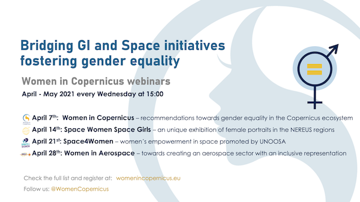
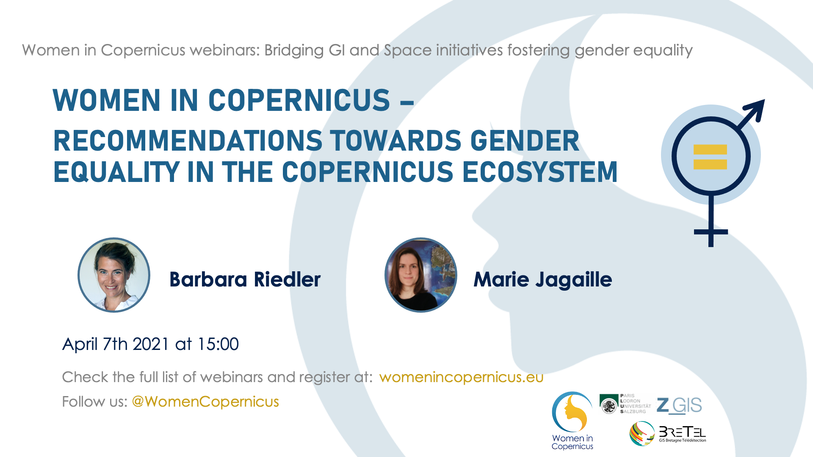
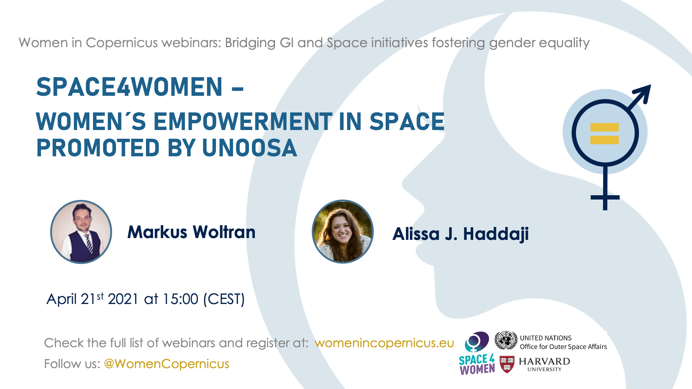
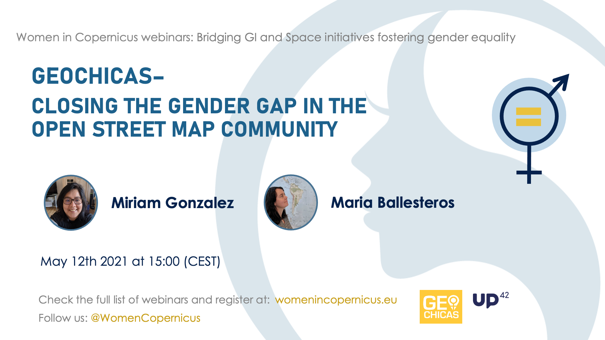

Events

April - May 2021
'Bridging GI and Space initiatives fostering gender equality' webinar series
Register here to attend webinars

07/04/2021 at 15:00 CET
WOMEN IN COPERNICUS – recommendations towards gender equality in the Copernicus ecosystem
Register here to attend webinars
Barbara Riedler
Barbara is an interdisciplinary researcher at the University of Salzburg, Austria. As a biologist and geoinformatic specialist, her thematic focus lies in indicator-based modelling for NGOs working in the humanitarian field. Within the Copernicus ecosystem her emphasize is on promoting user uptake and the Copernicus Academy. She is proud being member of the Women in Copernicus initiative and hopes that this webinar series fosters further cooperation to promote equality and inclusion in this sector.
Marie Jagaille
Graduated in environmental geography and project management Marie works as a project manager for satellite applications within the cluster "Brittany Remote Sensing (BreTel), France. Her role is to make satellite data (including Copernicus images and products) known and accessible to different publics (regional institutional actors, researchers, students, general public) and to support them in their discovery and new uses. Her missions are at the interface between researchers, companies, local authorities, students and national and European institutions.
14/04/2021 at 15:00 CET
SPACE WOMEN SPACE GIRLS – A UNIQUE exhibition of female portraits in the NEREUS regions
Register here to attend webinars
Roya Ayazi
Being trained as a German lawyer, Roya Ayazi held for more than 20 years positions in European/Governmental Affairs and has work experience in public administration and associations of civil society represented in Brussels. Since 2009 Secretary General of NEREUS (Network of European Regions Using Space Technologies) Roya heads its Brussels/Belgium based secretariat and is the main interface of the association at European level and coordinates network activities. She followed the major space legislative procedures with impact for the downstream sector in the past 10 years and established the network as a reference for regional user-communities. Outreach and promoting space towards the next generation and society, as well as a better gender balance are priorities to the network. In this context she embraced one of the networks’ flagship initiatives “Space Girls Space Women” and mobilized numerous member regions to share the exhibition as a joint European experience and bring it to their regions.
NEREUS made Roya a space enthusiast and she joined Women in Aerospace (WIA) to share the fascination with other women and win new-comers for the sector.
Susana Perez
Susana has a degree in Chemistry and Postgraduate in Science Journalism and Communication and in Management of European R&D projects. She has a long experience in working in Science Museums and Outreach Programmes including the organization of scientific events.
Nathalie Stephenne
Nathalie is geographer/ geomatic expert in public services of Wallonia. She worked as project manager and team leader on EO and GIS in private companies, at UBrussel, and at the EU JRC with a postdoctoral research on geomodelling. She created the EO and Geodata unit at ISSeP. Her interest in gender issues started within the GMOSS project with workshops and papers on gender and remote sensing. As representative of Wallonia, she promoted the Nereus Space Girls Space Women exhibitions and initiated the Women in Copernicus project funded by Cordinet. LinkedIn

21/04/2021 at 15:00 CET
SPACE4WOMEN – Women's empowerment in space promoted by UNOOSA
Register here to attend webinars
Markus Woltran
Markus Woltran is a Programme Officer in the Office of the Director of the United Nations Office for Outer Space Affairs (UNOOSA). He supports the Director of the Office in a broad variety of tasks and engages in diverse strategic and policy relevant areas such as #space4SDGs, interagency affairs, UNOOSA strategic directions and operational priorities (SDOP) as well as planning efforts. Additionally, he supports key activities and leads the organisation of international conferences, workshops, expert meetings and symposia. Markus is also in charge of the office's engagement on the implementation of a dedicated 'Space for Women' � Project. He also supports different UNOOSAs outreach and awareness raising activities as well as contributes to papers and other written products and publications. Markus has an experience as Associate Programme Officer in the UNOOSA programme on Space-Based Information for Disaster Management and Emergency Response (UN-SPIDER) as well as in the United Nations Information Service (UNIS) and in the Austrian Foreign Ministry. Markus holds a master�s Degree in political science.
28/04/2021 at 15:00 CET
WOMEN IN AEROSPACE – Towards creating an aerospace sector with an inclusive representation
Register here to attend webinars
Sweety Pate
Sweety Pate is a Satellite Operations Systems Engineer at QinetiQ. She is leading the Women in Aerospace Europe (WIA-E) Brussels group and a core member of the Space Generation and Advisory Council (SGAC) Belgium team. She is the Technical Committee Member of the AIAA Space Operations and Support (SOSTC). She is promoting science among students as the National Coordinator of Scientist of a Day NASA JPL competitions. Over the past years, she has been working with the leading aerospace industries and research organizations - German Aerospace Center (DLR), Thales Alenia Space (Italy), and Siemens R&D. She won awards from NASA for eco-friendly aircraft designs successively in 2011 & 2012 and presented the award-winning research at NASA Langley. She holds a Master's degree in Space Systems Engineering from TU-Delft. At the university, she also worked at the Delft Aerospace Rocket Engineering student association as a space engineer & launch crew member of STRATOS 2+ sounding rocket that made a European amateur rocketry altitude record in 2015. She was involved in Poland Mars Analogue Simulation (PMAS) 2017 as an Analog Astronaut and a CapCom.
Stella Alexandrova
Stella Alexandrova is a project manager at QinetiQ. Previously she worked as project manager at Thales Alenia Space Belgium and managed long-term research innovation projects for the European Commission (EC). In the early days of career she worked at the ESA's European Space and Technology Centre (ESTEC). In her free time she writes books and articles about the importance of commercialization of space technology and solutions. She was awarded a PhD by the Faculty of Aerospace Engineering, TU-Delft and holds a Master of Space Science from the International Space University (ISU).
05/05/2021 at 15:00 CET
WOMEN IN GEOSPATIAL+ – Changing the status quo by creating a strong network of women+ leaders and changemakers
Register here to attend webinars

Julia Wagemann
Julia is a geospatial analyst, PhD candidate and community-builder who promotes the use of large volumes of open meteorological and climate data and open geospatial software. She works together with companies and intergovernmental organisations and runs Jupyter-based training on geospatial data analysis and programming. By co-founding Women in Geospatial+ in March 2019, she follows her calling to improve diversity and gender-equality in the geospatial field. She co-developed a speakers database giving more visibility to speakers from under-represented gender backgrounds and organises a webinar series on career development.
Aida Monfort Muriach
Aida is a computer engineer specialized in geospatial technologies, she has worked as a researcher since 2016 with GEOTEC: Geospatial Technologies Research Group - Universitat Jaume I, a research group specialized in geospatial technologies and Geographic Information Systems development. Here she has worked on developing web and mobile apps in several European and international projects. She joined Women in Geospatial+ in March 2019 and is currently developing and maintaining the WiG+ speakers database to give more visibility to women working in the field. She also a member of the core team in the Women in Copernicus initiative.

12/05/2021 at 15:00 CET
GEOCHICAS– Closing the gender gap in the open street map community
Register here to attend webinars
19/05/2021 at 15:00 CET
EUROGI “WOMEN IN GI” – A policy focus group to promote gender equality in the gi sector
Register here to attend webinars

26/05/2021 at 15:00 CET
EQUALITY, DIVERSITY AND INCLUSION – Views for the European Commission
Register here to attend webinars
08/03/2021
WiC at the "Women and Copernicus" webinar
9/12/2020
WiC at the European Space Week - session “Space for Equality, Diversity & Inclusion”
Check the presentation of the session.
25/11/2020
WiC at the Copernicus Academy and Relays General Assembly
Have a look at the agenda and check the presentation.
5/11/2020
WiC at the CoRdiNet - CopHub.Ac Joint Final Event "A hitchhiker´s guide to digitalisation in Europe - the detour through Space"
Watch recording
6/10/2020
Space Girls Space Women (Nereus) - WiC pitch during SGSW Nereus websession
Watch recording
24/09/2020
WiC at EOcafe (EARSC) - Presentation of preliminary results and debate on Women in Copernicus
Watch recording
SUPPORTERS


PARTNERS